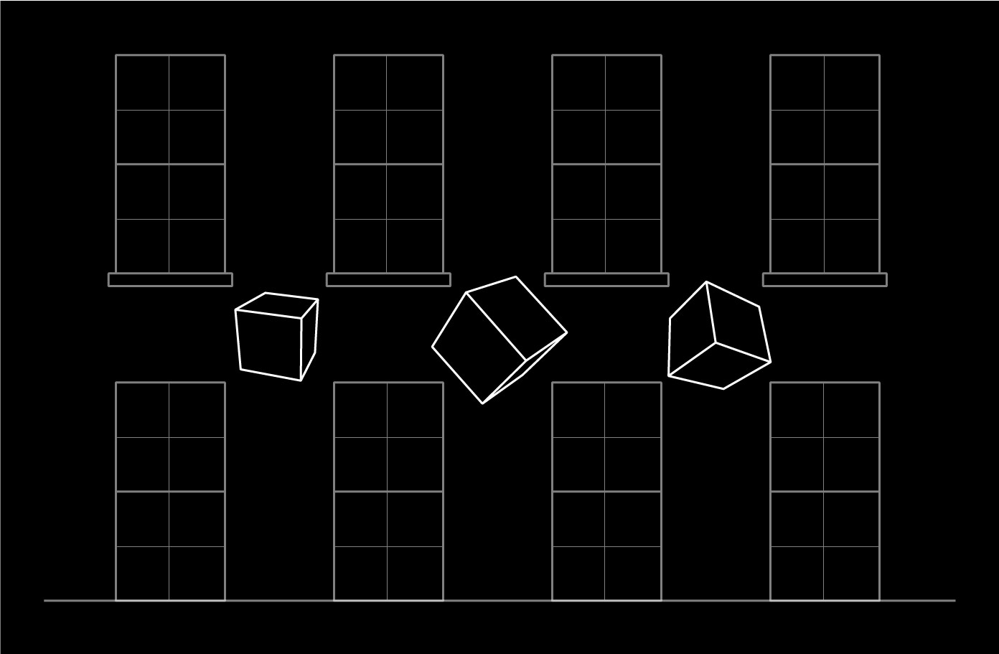
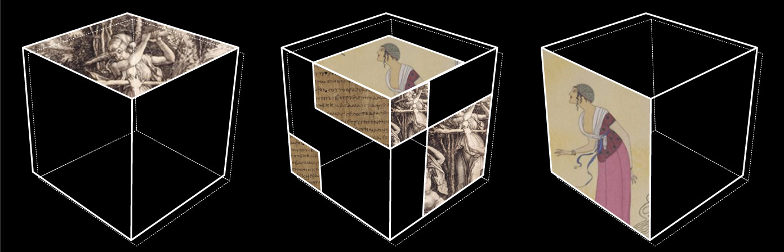

Wed, Dec 14, 2016
Today was supposed to be fast forward coding. Tomorrow we are setting up the big projector for the projection mapping installation in the atrium of Chester Beatty Library. By then my Raspberry Pi based solution has to be ready for mapping. That was the goal for today.
Most of the day I spent at the Chester Beatty reading room. Few days ago I noticed how beautifull the ceiling are there. It is the perfect room for coding culture and art projects. It has good internet connection, beautiful ceiling and it is quiet. If somebody has to say something there, whispering is the loudest you get.

I was building the projection mapping solution by keeping in mind that things should work. Test first, think through, solve problems before they arise. Many small decisions have to made in a process like this. How many images? What would be the perfect size of the image files? How big is the canvas? Naming of the variables. Small steps. Tests.

After I managed to write a simple script which would automatically populate virtual rectangles from an image file, Chester Beatty was closing and I changed my location to the Chocolate Factory. There I managed to get a few more steps done. Hunger started to manifest its existence and I decided to go home.

The last part for today was to create base configuration for mapping tomorrow. I transfered code to one of my Raspberry Pi’s and connected it to a projector. The code compiled without problems and soon I had the reason to be satisfied. Ready for tomorrow. It is going to be fun.

Tue, Dec 13, 2016
After three workshop days, this day seemed like a gift. The lack of a day off was showing off its results on my body and mood. The day started slowly but with some motivation to get smaller tasks done. It seemed like I succeeded to build a manageable to-do list for today. Later the human in me would take over. In the following image one can see the National Gallery of Ireland. Very nice architecture for projection mapping.

Despite the tiredness and mood issues, the day was relatively fun. With Jenny and Justyna we went to Bridge 21 to meet Jake Rowan Byrne who is a Creative Technology Curator at the Lexicon Library. Jake wanted us to meet to discuss the possibility of using Raspberry Pi and projection mapping in education.
Bridge 21 seemed like a nice place with lecture rooms designed around the idea of learning in teams and collaboration. For example a room might have randomly distributed desks, each of them equipped with a screen, a team would be formed out of four people, they would learn by trying to solve problems together. Another room would have desks for more people than computers. These are specifically made for kids and the lack of computers is there to make them collaborate. There were windows filled with sticky notes where one could see the feedback from events at the space.


After the meeting I felt a strong need to rest. Took a nap and now I am writing this. Earlier during the day I also did work on the Chester Beatty Library collection images, suggested by the curators of the collections, for the projection mapping installation that will be opened at the Chester Beatty Library atrium this Friday (16 Dec 2016) 18:00.
That’s it for today! Tomorrow is going to be a creative day as I will spend it on building a simple generative visual solution for the final projection mapping event. My ambition is to have it on a single Raspberry Pi mini-computer that will be connected to a 20K ANSI lumen projector. I am going to use openFrameworks with ofxPiMapper–a projection mapping addon that I am developing, it is open source and available on GitHub.
Mon, Dec 12, 2016
The highlight of today was supposed to be the Projection Mapping with the Raspberry Pi workshop at TOG Dublin Hackerspace. Nevertheless there were some things happening before. The workshop had to start at 7 PM.
I felt very tired throughout the day as the previous workshop days already took a great deal of energy. I went to the Chocolate Factory to have a coffee there, answer some emails and help Jenny and Justyna with the projection mapping installation flyer that would advertise the projection mapping installation in the atrium of Chester beatty Library.
After having a random lunch at a random burger place I went back to the Chocolate Factory to meet Ellen and Vince from the Festival of Curiosity, they are responsible for getting me a free desk in the building for creative purposes. Ellen could not come, so we had meeting with Vince alone. Jenny, Justyna, me and Vince. We were having a chat about some integral ideas that would make the collaboration between the Festival of Curiosity and Chester Beatty Library complete.
After having a nice dinner at a better random burger place not far from the TOG Dublin Hackerspace, it was time to go there and set up the workshop. The workshop itself was an experimental one. I have not done anything at this advanced level with a time limit of two hours. During the two hours I had to introduce tell about the Maker in Residence program, me, the context, show how to setup the Raspberry Pi for projection mapping and build a simple application with openFrameworks.


It all went well, but the learning was that two hours are not enough. All in all the last three days were full of learnings regarding the workshops. These learnings will help me a great deal to build better ones in the future.
Sun, Dec 11, 2016
Today was a very straightforward day. I woke up later than the previous days, had a run, had long and heavy breakfast with my host. Had the opportunity to invite her to the workshop today, since it was meant to be for adults and my host is one. Surprisingly.

I went to the Library in a relaxed manner, observing the surroundings and enjoying the undefinable weather. Got my coffee around noon and started to iterate on slides, which basically meant copying them from earlier workshop folders and deleting most of the things that are not relevant.
Six adults came, and all of them were very interesting personalities with backgrounds that one would not imagine being close to projection mapping. But maybe that is one of the things that defines adults. They are realising that there are so many things that they have not noticed while being on the rails of their career.
For one hour I was telling about my background and my projects to gain a little bit of credibility in front of the eyes of the adults. It seemed to work as they were surprisingly active during the hands-on part of the workshop. After I showed the basics of my projection mapping software, it seemed that for some of them the world around them disappeared. That made me very happy.


After such a good day we went to the Stag’s Head original Victorian era pub on Dame Lane to have a pint of Oharas. Jenny showed me an amazing Asian food supermarket where I hoped to find chilli and lentils. I found so much more there. Besides finishing my blog post, this evening is for cooking hot food and having good thoughts.


Sat, Dec 10, 2016
Yesterday, after preparing and cloning the SD cards for the workshops today and tomorrow, i had thoughts, influenced by tiredness and being alone at my host’s home. The thoughts were about working hours and output. What does the system expect from an individual in different contexts? What does the scanner see?
I realize that I have been lucky to be in a very interesting context while here in Dublin. The host of mine is involved with EU research, more specifically, research about the state of the working environment in EU member states. How many people are employed, how much taxes are paid, what are the expectations from all sides. Freelancers and artists are considered endangered. They do not fit with the system too good, thus they are not easy to handle and to predict by the system, thus the system might feel helpless and this could lead to a conclusion that these people are endangered.
I am a freelancer. Here, at the Chester Beatty Library, I see people arrive and leave on time. I don’t have specified working hours. In fact, I have to get things done, for the last five days I start my day at 10 AM and end it around 10 PM. The most important things I am responsible for are happening during weekends. I am not complaining. In fact I am very happy. How come? I am not completely sure. I will write it down once I have a clear idea about that.
It was a bit of a rush today. Had to meet Jack at 12 PM, brief him how the workshop is going to happen. Jack is a teenager that is supposed to write a blog post from his perspective about the workshop. I am very curious what the outcome will be.

At 12:30 PM I had to meet Ashley, the teen coordinator, to brief her about the workshop as well. Right after we rushed into the room, we got in later than planned, but we manager to set up everything just on time. The workshop had to begin at 14:30 PM.

It was the first time for me to do the Projection Mapping with the Raspberry Pi workshop with teenagers. They seemed to be very open in terms of experimenting with the software. On the second part of the workshop I did tell more about my background and showed the projects I’ve done in the past. It seemed that that was the most interesting part of the workshop for them. It should have been done in reverse order, first the story, then the hands-on part. This is the way I am going to do that tomorrow and that is the way it is usually done.

Today I also had mixed feelings during the workshop. Being busy and knowing that people important to me are not doing so well, me being far away from them with limited chances to support them, made me feel a bit down today. Nevertheless I feel happy about having such feelings as well. All is fine. Luckily. That’s it for today. Would like to iterate on slides tonight, but, how come, I forgot the power supply of my computer at the library! Seems that there is no other way as to take this evening off and proceed with the slides tomorrow.
Fri, Dec 9, 2016
Day five turned out to be full of practical tasks. It started with an hour of making a last minute flyer for the Creative Lab for Teens initiative at the Chester Beatty Library. Someone had promised Jenny to make it, but changed her mind in the last minute. So I contributed my graphic design skills to make a simple flyer.

The day went on with preparing the workshop for tomorrow. The main challenge was to get the collection images out from the library digitization database for them to be used as textures during the workshop. It was not possible to get the source files by using the public access computer, I had to ask Shauna for help. With her help we managed to solve it quickly.
Working with the images reminded me that whenever big file sizes are involved, the time spent on a task multiplies at least two times. Choosing, organizing and processing the images is a time consuming and repetitive task. Got it done. There were other, smaller tasks already waiting for me.
A preview of the projection mapping installation that I have to do next week had to be created. Armed with the fresh images from the library database and some preliminary sketches I managed to do it. Quickly.

Along the way I had thoughts. During the day I was asking whether the library has any kind of graphic design guidelines to follow when designing handouts. As far as I understood, there are, but nobody takes them seriously. That made me thinking even more. I did not get a full answer and my asumptions might be wrong. A museum should have a permanent graphic designer position that would take care of the consistency of any kind of visual and text material that leaves the house. But there is not. One can not expect pro graphic designer skills from people related to other fields. Software alone (especially office software) won’t do.
Another thing was the power of the computers and quality of the software used to navigate the digitization database. If I would imagine myself coming for the residency without my hardware and software, I would not be able to complete the tasks I did today. For digital content creation in a museum my recommendation would be to have at least one decent computer with multimedia software for image and video processing. There should be high speed external hard drives available for quick and efficient transfer of digitized files as they are good quality and good quality usually means big file sizes.
Still have to prepare the magic Raspberry Pi SD card for tomorrow’s workshop. Will get it done. Now.
Thu, Dec 8, 2016
Despite the day started a little bit late, there were a lot of good and exciting things happening. Mr. D confirming the possibility to use the Dublin Castle 20K ANSI lumen projector. I am still trying to not get too excited as I still have to focus and create serious content for this amount of pixels and light.
After meeting Jenny and Justyna for breakfast coffee at the Silk Road Cafe, I went to meet Gerry Scanlon from the Chocolate Factory to share “hi” and get another tour around the space. I got introduced to some artists and designers inhabiting the space. I stayed there afterwards to do one hour of practical work.
TOG Dublin Hackerspace launched the Eventbrite site of the projection mapping workshop that is going to take place there next Monday 19:00. Twelve tickets were booked almost instantly. The workshop got even listed on the Projection Mapping Central (http://projection-mapping.org/) which is curated by Brett Jones who is the co-founder of Lumenous and Invented stuff at Disney Imagineering, Microsoft Research. This is Brett’s Twitter profile.
After lunch we went over the equipment needed for the projection mapping workshops at the Chester Beatty Library on Saturday and Sunday. We also checked the lecture room the workshops are going to take place, synchronized with the Library Security, went over child protection guidelines and specified tasks to be still done before the workshop days.


For the last part of the day I am here, at the Chocolate Factory, enjoying the empty studio room with a chair, desk and a lamp. Writing this blog post. Feeling grateful about all the good news I got today. There are still a couple of small things left before I end the day and I am going to get them done. Now.

Wed, Dec 7, 2016
The day started in a very structured and disciplined way. I went for a run around the area not far from Foxrock, had quick breakfast and hopped into the bus 145 to get to the city center. At 10:00 we had coffee and cake with Jenny and Justyna at the Silk Road Cafe which is located in the Chester Beatty Library building. We reviewed the general plan and discussed changes.
During the first part of the day I went to the reference library to look for images that I could use for the upcoming projection mapping workshops this weekend. I am going to run an introductory projection mapping workshop for teenagers on Saturday and for adults on Sunday. For the workshop to fit the context of the Chester Beatty Library, I decided to search for images in the digitized artifact database. I found some nice fashion illustrations from the western collection.
At 12:30 we went to the Silk Road Cafe again to have lunch with the trustees of the Chester Beatty Library. I was introduced to the director Ms Fionnuala Croke, it was nice to exchange a couple of kind phrases with her.
The rest of the day I spent at the reference library, iterating on the projection mapping installation visual solution and creating visuals for the workshop at the TOG Hackerspace next Monday 12 Dec 2016. Jenny was updating me occasionally about changes. She sent a kind email to the Latvian embassy in Dublin (since my nationality is Latvian) inviting the local Latvian community to join the opening of the projection mapping installation next Friday 16 Dec 2016.

In addition to the scheduled part of the day I had discussions and thoughts about the creative process in museums and creative spaces such as makerspaces, hackerspaces and fab labs. Jenny told me about her experience at the Museomix open museum workshop where people with different backgrounds came together for a three-day workshop to explore and create something new for a museum in France. From what Jenny told me I extracted that people involved with museums tend to think in a linear way. They make a plan and try to execute it from beginning to end without accepting the possibility for something to change in the middle of the process. It is different with makers–they accept and expect change in every step they make. In terms of creating prototypes for anything in an efficient way, in limited amount of time, the latter works if the involved stakeholders have a flexible mindset.
Another thought that sneaked into my mind today was equipment related. Working with projection mapping always involves use of projectors, which for the most part are expensive. I have succeeded in cutting down the computer hardware costs by developing open source projection mapping software that runs on the Raspberry Pi mini-computer. It is not that easy to cut down projector costs. There is another interesting fact. Chester Beatty Library is located next to the Dublin Castle. They are not aware of what kind of equipment each of the institutions have. In case Dublin Castle has a free projector lying around, it is problematic to get information about that. If the museums share any kind of funding, why couldn’t they share information about what kind of equipment they have? It would open doors for a lot of interesting new media projects.
Tue, Dec 6, 2016
Even though I felt very confident regarding the fact that I took everything I need for the residency, I found out that i should not. The Ireland to Europe power adapters were missing. I realised that after I had the idea to charge my devices. Had to find them on my way to the library, which went surprisingly smooth. Nevertheless at the library I got my badge for accessing the hidden parts of the Chester Beatty Library. Then we had a review of the general residency plan with Jenny and Justyna.

Right after we went to the Chocolate Factory where we met Ross Williams from the Festival of Curiosity. Ross gave me access to the place and showed me the room with the desk allocated for me in case I feel the need to work late. Chocolate Factory is a multidisciplinary space where artists and designers can feel at home. It has an acrobatics room in the middle and a cafe on the ground floor.


Later, back at the Chester Beatty Library, I was introduced to Sinead Ward, the Digital Manager at the Chester Beatty Library. She showed me how to use Portfolio–the digital archive of the Chester Beatty Library artifacts. I will use the system to look for images that will serve as content for the projection mapping workshops and installation to be completed during the residency. Just after that I was at the IT office to discuss and test computer network related issues.


Mon, Dec 5, 2016
Leaving Berlin early in the morning to go to Dublin as today is the first official day of my residency. After a beautiful, cold and foggy night in Berlin, thick and crisp rime ice was covering objects left in the open. Morning sun casted long shadows and the white coated objects seemed twice as far away as they seem normally.

Jenny, Head of Education at the Chester Beatty Library, was waiting for me at the Dublin Airport. The flight got delayed and she had to wait for one extra hour. We were supposed to have a meeting with Jessica, Head of Collections & Conservation at the Chester Beatty Library, to outline the possible collaboration in terms of the content being used for the projection mapping installation part of the residency. We also met Justyna, Education Assistant at the Chester Beatty Library. Justyna and Jenny introduced me to other people working at the institution. In the photo from left: Justyna, Jessica and Justyna.

I was very happy to see the printed material regarding the projection mapping installation that will be visible at the atrium of the Chester Beatty Library from 16th to 18th December 2016. I hope that that this kind of digital approach will reveal new perspectives to the people involved in the life of the museum. Sometimes it is a matter of showing a working prototype and further ideas might go into unexpected directions. Curious.

Thu, Dec 1, 2016
Yesterday I made some sketches of the projection mapping installation in the atrium of the Chester Beatty Library. I am going to use six mini-projectors and six Raspberry Pi’s which will run a data-driven visual application. Images of the various artifacts of the Chester Beatty Library collection will be used to fill the database.



Mon, Nov 28, 2016
Good day. This is my first post regarding my residency at the Chester Beatty Library in Dublin, Ireland. The residency starts next week and there are still a lot of things to prepare for it. During the residency I will give several Projection Mapping with the Raspberry Pi workshops and build a projection mapping installation.
I am very excited about the upcoming workshop at the TOG hackerspace on 12 December 2016. It is going to be an introduction to the world of projection mapping through Raspberry Pi and open source software. Follow TOG to not miss detailed information about what time it is going to happen.
All in all I am very excited about the residency. I like the concept of the Maker in Residence programme which is also about opening museum spaces for makerspace and hackerspace activities.